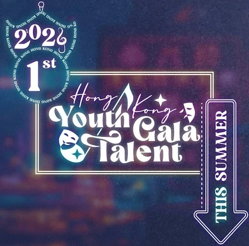

What is HKYTG? 甚麼是香港青年才藝盛典？
Hong Kong Youth Talent Gala (YTG) is an inter-school talent show that aims to promote youth arts culture, celebrate diverse talents, and fully unleash the creativity of the secondary school community.
香港青年才藝盛典是一項聯校才藝匯演，旨在推廣青年藝術文化、彰顯多元才能、並充分釋放中學群體的創造力。
Why Join HKYTG? 為什麼加入香港青年才藝盛典？
- Develop leadership and organisation skills 培養領導能力
- Nurture creative vision 培育創意思維
- Polish on-stage performance skills 精進表演技巧
- Connect with like-minded peers 結識藝術同伴
- Enrich personal portfolio 豐富個人履歷
Meet Our Team 籌辦委員會
The YTG founding team is a student-led organisation. All members are elite students with extensive experience in stage performance, and a profound passion for promoting artistic culture across the secondary school community and beyond.
YTG籌辦委員會由學生主導，全部成員均為擁有豐富舞台表演經驗，並對在中學社群及更廣泛層面推廣藝術文化充滿熱忱的精英學生。